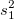
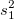
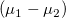

Algorithmen (t-Test bei zwei Stichproben)
tTest-TwoSample-Algorithm
Der t-Test bei zwei Stichproben berechnet eine studentisierte t-Statistik und die verbundene Wahrscheinlichkeit, um zu testen, ob die Differenz der zwei Stichprobenmittelwerte gleich /math-12f3be74f7266e038bdf61eb68a6208c.png "\mu_d\,\!") ist (d.h., zum Testen, ob ihre Mittelwerte gleich sind, können Sie testen, ob ihre Differenz 0,
ist (d.h., zum Testen, ob ihre Mittelwerte gleich sind, können Sie testen, ob ihre Differenz 0, /math-590eba6400c9e4df07e0c234f91e4460.png "\mu_1-\mu_2=\mu_d=0\,\!") , ist ). Die Hypothesen haben folgende Form:
, ist ). Die Hypothesen haben folgende Form:
/math-f67a81ef315f0c59070ef53cb50b3932.png "H_0:\mu_1-\mu_2=\mu_d\,\!") vs.
vs. /math-5c09300d675833793616502094acaa0f.png "H_1:\mu_1-\mu_2 \ne \mu_d") Beidseitiger Test
Beidseitiger Test
/math-1fc800dcea3acfe50f9e90c310b1174a.png "H_0:\mu_1-\mu_2 \le \mu_d") vs.
vs. /math-0fbc9ae55928f128a94afcf65c2c2e39.png "H_1:\mu_1-\mu_2 > \mu_d") Oberer Test
Oberer Test
/math-8d8812a65564ffde40d299d450d3de7f.png "H_0:\mu_1-\mu_2 \ge \mu_d") vs.
vs. /math-9a968e5033dd7110b7973529fa35c85d.png "H_1:\mu_1-\mu_2 < \mu_d") Unterer Test
Unterer Test
Teststatistik
Betrachten Sie zwei unabhängige Stichproben, /math-d60f5062564e1ece65993038b62484fa.png "x_1\,\!") und
und /math-9defdb27049cde0b5bdfd4e762a02d6b.png "x_2\,\!") , des Umfangs
, des Umfangs /math-8d88a43872d6db6535d8672a15f09ce2.png "n_1\,\!") und
und /math-2f6fac59fce80e76d698bcf5ea77bab6.png "n_2\,\!") aus zwei normalverteilten Grundgesamtheiten mit den Mittelwerten
aus zwei normalverteilten Grundgesamtheiten mit den Mittelwerten /math-4ed789d5f6cd3fea302e306da621cb83.png "\mu_1\,\!") und
und /math-917bb8defee48f460766703f23fc0822.png "\mu_2\,\!") und den Varianzen bzw.
und den Varianzen bzw. /math-f94e0c3605e0ebe3aa890455f27416e5.png "\sigma_2^2\,\!") , dann haben wir:
, dann haben wir:
/math-6dc73b5670604b65621d1ad70209c678.png "\bar{x}_1=\frac{1}{n_1}\sum_{j=1}^{n_1}x_{1j}") ,
, /math-06a309ba82fba50c69561e78b4ffdf7f.png "\bar{x}_2=\frac{1}{n_2}\sum_{j=1}^{n_2}x_{2j}") , ,
, , /math-1ea85773f946cf6770cf4f76022e133d.png "s_2^2=\frac{1}{n_2-1}\sum_{j=1}^{n_2}{(x_{2j}-\bar{x}_2)^2}")
wobei und /math-68dc9b353bc272e9d32196f5e30bff4e.png "\bar{x}_2\,\!") Stichprobenmittelwerte und  und
Stichprobenmittelwerte und  und /math-8a65733320d52c6da4efeeb5888dba00.png "s_2^2\,\!") Stichprobenvarianzen sind. Danach wird die T-Teststatistik berechnet mit:
Stichprobenvarianzen sind. Danach wird die T-Teststatistik berechnet mit:
Für die gleiche Varianz wird angenommen, das ist /math-3728dc0e9ed8d4ea6c77089a7c1bb2fb.png "\sigma_1^2=\sigma_2^2\,\!") :
:
In diesem Fall hat die Teststatistik t
eine t-Verteilung mit /math-6350a1d09d381cb5b9c2420a49cec064.png "(v = n_1+n_2-2)") Freiheitsgraden und
Freiheitsgraden und
/math-49682ab10edeb0f5ed248d7195b85d78.png "s_p=\sqrt{\frac{(n_1-1)s_1^2+(n_2-1)s_2^2}{n_1+n_2-2}}")
ist die gemeinsame Varianz der zwei Stichproben.
Für die gleiche Varianz wird nicht angenommen:
In diesem Fall hat die herkömmliche t-Statistik bei zwei Stichproben keine t-Verteilung mehr und keine approximative Teststatistik, t'wird verwendet:
Und eine t-Verteilung mit v Freiheitsgraden wird verwendet, um die Verteilung von t' zu approximieren, wobei
Vergleichen Sie den t- Wert mit dem kritischen Wert. Wir weisen /math-806277203dedea2ed8321f6cbd465a54.png "H_0\,\!") zurück, wenn:
zurück, wenn:
Für beidseitigen Test: ;
Für oberen Test: /math-b3c71dc9421063ffaf6de1641540a5d5.png "t > t_\sigma\,\!") ;
;
Für unteren Test: /math-b3c0361ff553afb248a469861134f399.png "t < -t_\sigma\,\!") ;
;
Der p-Wert wird auch mit einem benutzerdefinierten Signifikanzniveau /math-3ac6004d77c0cc0055e95c99b9dfd7e0.png "\sigma\,\!") verglichen, für das im Allgemeinen 0,05 verwendet wird. Die Nullhypothese wird zurückgewiesen, wenn
verglichen, für das im Allgemeinen 0,05 verwendet wird. Die Nullhypothese wird zurückgewiesen, wenn /math-350fad5bdd3c28b92d7b6a076336a463.png "p < \mu\,\!") .
.
Konfidenzintervalle
Die obere und untere Konfidenzgrenze für die Mittelwertdifferenz  werden berechnet als:
Für die gleiche Varianz wird angenommen:
| Nullhypothese |
Konfidenzintervall |
|
![\left[(\bar{x}_1-\bar{x}_2)- t_{\alpha/2}s_p\sqrt{\frac{1}{n_1}+\frac{1}{n_2}}, (\bar{x}_1-\bar{x}_2)+ t_{\alpha/2}s_p\sqrt{\frac{1}{n_1}+\frac{1}{n_2}}\right]](../images/Algorithm_(TwoSampletTest)/math-35e508ffa325356798bfeb78b55c5162.png "\left[(\bar{x}_1-\bar{x}_2)- t_{\alpha/2}s_p\sqrt{\frac{1}{n_1}+\frac{1}{n_2}}, (\bar{x}_1-\bar{x}_2)+ t_{\alpha/2}s_p\sqrt{\frac{1}{n_1}+\frac{1}{n_2}}\right]") |
|
![\left[(\bar{x}_1-\bar{x}_2)- t_{\alpha}s_p\sqrt{\frac{1}{n_1}+\frac{1}{n_2}}, \infty\right]](../images/Algorithm_(TwoSampletTest)/math-438038a816d1733a3f4947f61e539c61.png "\left[(\bar{x}_1-\bar{x}_2)- t_{\alpha}s_p\sqrt{\frac{1}{n_1}+\frac{1}{n_2}}, \infty\right]") |
|
![\left[-\infty, (\bar{x}_1-\bar{x}_2)+ t_{\alpha}s_p\sqrt{\frac{1}{n_1}+\frac{1}{n_2}}\right]](../images/Algorithm_(TwoSampletTest)/math-043e91f03e23cf4cb47273b881ee6f02.png "\left[-\infty, (\bar{x}_1-\bar{x}_2)+ t_{\alpha}s_p\sqrt{\frac{1}{n_1}+\frac{1}{n_2}}\right]") |
Für die gleiche Varianz wird nicht angenommen:
| Nullhypothese |
Konfidenzintervall |
|
|
|
![\left[(\bar{x}_1-\bar{x}_2)- t_{\alpha}\sqrt{\frac{s_1^2}{n_1}+\frac{s_2^2}{n_2}}, \infty\right]](../images/Algorithm_(TwoSampletTest)/math-6317c80637d203c8b436ce4d361f825c.png "\left[(\bar{x}_1-\bar{x}_2)- t_{\alpha}\sqrt{\frac{s_1^2}{n_1}+\frac{s_2^2}{n_2}}, \infty\right]") |
|
|
wobei der kritische Wert der t-Verteilung mit v Freiheitsgraden ist.
Analyse der Trennschärfe
Die Trennschärfe eines t-Tests bei zwei Stichproben ist ein Maß für seine Fehlererkennbarkeit. Einzelheiten zu dem Algorithmus zum Berechnen der Trennschärfe lesen Sie im Abschnitt Trennschärfe und Stichprobenumfang.
Referenz
Der t-Test bei zwei Stichproben wird mit einer Nag-Funktion implementiert, nag_2_sample_t_test (g07cac). Bitte lesen Sie weitere Einzelheiten zu dem Algorithmus im entsprechenden NAG-Dokument nach.